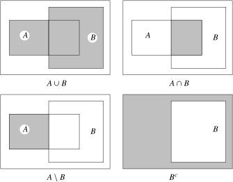

4.3 Prawdopodobieństwo
4.3.1 Definicja prawdopodobieństwa
Jak można interpretować pojęcie prawdopodobieństwa?
Są trzy podstawowe interpretacje pojęcia prawdopodobieństwa:
prawdopodobieństwo klasyczne (logiczne), lub prawdopodobieństwo a priori,
prawdopodobieństwo statystyczne, częstościowe (doświadczalne), lub a posteriori,
prawdopodobieństwo subiektywne.
Intuicyjnie, prawdopodobieństwo utożsamiamy z szansą zrealizowania się określonego zdarzenia losowego, np. z szansą wyrzucenia 3 oczek na symetrycznej kostce do gry.
4.3.2 Podstawowe pojęcia
Doświadczenie losowe to eksperyment, którego wynik zależy od pewnego mechanizmu losowego. Np. rzut monetą lub kostką do gry. Przestrzeń (zbiór) zdarzeń elementarnych, oznaczamy \(S\) lub \(\Omega\), to zbiór wszystkich możliwych wyników doświadczenia losowego. Zdarzenia elementarne są parami rozłączne i wspólnie tworzą zbiór \(S\). Zdarzenie losowe (np. zbiór \(A\)) to podzbiór przestrzeni zdarzeń elementarnych \(S\) składający się ze zdarzeń elementarnych. Np. \(A = \{e_1, e_2, ...\}\). \(\emptyset\) - zbiór pusty, czyli zdarzenie niemożliwe. Zbiór \(A^c\) zbioru \(A\) zdarzeń elementarnych nazywamy zdarzeniem przeciwnym do zdarzenia \(A\).
Doświadczenie losowe jest to eksperyment, którego wyniku nie możemy z góry przewidzieć.
Wszystkie możliwe wyniki doświadczenia losowego tworzą zbiór zwany przestrzenią zdarzeń elementarnych \(S = \{e_1, e_2, ...\}\). Ten zbiór może być: skończony; nieskończony, ale przeliczalny (zbiory nieciągłe, skokowe); lub nieskończony i nieprzeliczalny (zbiór ciągły, np. przedział liczbowy). Dowolny podzbiór zbioru \(S\), np. zbiór \(\{e_2, e_4\}\), nazywa się po prostu zdarzeniem (nie mylić ze zdarzeniem elementarnym).
\(A\cup B\) - suma zdarzeń losowych, która odpowiada zajściu co najmniej jednego ze zdarzeń A, B (suma zbiorów A i B). \(A\cap B\) - iloczyn zdarzeń losowych A i B odpowiada jednoczesnemu zajściu zdarzeń A i B (przekrój zbiorów A i B).
Literą \(F\) oznaczamy zbiór wszystkich podzbiorów przestrzeni zdarzeń elementarnych \(S\) (zbiór wszystkich zdarzeń losowych) - dla przeliczalnych przestrzeni zdarzeń będzie to ich Power set (\(2^{|S|}\)). Trójkę \((S, F, P)\) nazywamy przestrzenią probabilistyczną.
Często nie interesuje nas konkretne zdarzenie elementarne (np. wyciągnięcie asa ze standardowej talii 52 kart), ale ich pewien zbiór, czyli pewne zdarzenie losowe (np. prawdopodobieństwo otrzymania fulla w pokera, prawdopodobieństwo prawidłowego wytypowanie szóstki w Lotto itp.).
Mówimy, że zaszło zdarzenie A, gdy wynik doświadczenia losowego należy do zbioru zdarzeń elementarnych A, przy czym zbiór \(A \subseteq S\).
W rachunku prawdopodobieństwa zdarzenia losowe są utożsamiane ze zbiorami, dlatego rachunek zdarzeń jest tożsamy z rachunkiem zbiorów. Podstawowe operacje na zdarzeniach, czyli np. sumę, iloczyn lub dopełnienie zbioru (podobnie jak operacje na zbiorach) możemy przedstawić graficznie za pomocą tzw. diagramów Venna.

Prawdopodobieństwo zdarzenia \(A =\) wyrzucenie co najmniej 4 oczek na kostce do gry oznaczamy \(P(A) = P(\{e_1 = 4, e_2 = 5, e_3 = 6\})\).
4.3.3 Zmienna losowa i rozkład prawdopodobieństwa - wprowadzenie
Zmienna losowa jest to funkcja określona na zbiorze zdarzeń elementarnych S i odwzorowująca elementy tego zbioru w zbiór liczb rzeczywistych R. Zmienne losowe, podobnie jak zbiory, oznaczamy wielkimi literami. Np. dla eksperymentu polegającego na rzucie dwiema sześciennymi kostkami możemy zdefiniować zmienne: X = liczba oczek na pierwszej kostce + liczba oczek na drugiej lub np. Y = średnia liczba oczek, które wyrzucono podczas rzutu dwiema kostkami.
Funkcja rozkładu prawdopodobieństwa (rozkład prawdopodobieństwa) - odwzorowanie przyporządkowujące wszystkim wartościom zmiennej losowej, odpowiadające tym wartościom prawdopodobieństwa P.
Doświadczenie losowe: Rzut monetą;
\[S = \{R, O\}\] \[f: S \rightarrow X \in \{0, 1\}\] \[R \rightarrow 0, O \rightarrow 1\]
Rozkład prawdopodobieństwa: \(0 \rightarrow 0.5 \wedge 1 \rightarrow 0.5\)
Podobnie jak wiele innych funkcji, rozkład prawdopodobieństwa można też obrazowo przedstawić na wykresie w układzie współrzędnych.
Innym przykładem rozkładu prawdopodobieństwa zmiennej losowej będzie rozkład zmiennej X = liczba oczek, które wypadły podczas rzutu sześcienną kostką.
Przedstawione wyżej rozkłady prawdopodobieństwa są rozkładami zmiennej skokowej. W statystyce duże znaczenie mają też rozkłady prawdopodobieństwa zmiennych ciągłych. Funkcje rozkładu prawdopodobieństwa dla zmiennych ciągłych nazywamy funkcjami gęstości prawdopodobieństwa.
W przypadku zmiennych skokowych, wartości funkcji rozkładu prawdopodobieństwa są prawdopodobieństwami odpowiadającymi argumentom funkcji (wartościom zmiennej losowej). W przypadku zmiennych ciągłych wartości funkcji rozkładu są wielkościami określanymi mianem gęstości prawdopodobieństwa, natomiast prawdopodobieństwa liczymy wyznaczając pola powierzchni pod krzywą funkcji gęstości rozkładu prawdopodobieństwa dla wybranych przedziałów. Np. dla powyższego przykładu, gęstość prawdopodobieństwa jest stała (funkcja prawdopodobieństwa jest stała) i równa \(\frac{1}{6}\), a przedział zmienności \(X = [0, 6]\).
Wprowadzenie funkcji gęstości i pojęcia gęstości jest niezbędne dla wyznaczenia prawdopodobieństw, gdy badamy zmienne ciągłe, gdyż w ich przypadku nie jest możliwe wyznaczanie prawdopodobieństw w taki sam sposób jak np. w przykładach dotyczących rzutów monetą lub kostką do gry (przeliczalny zbiór zdarzeń elementarnych), co wynika z faktu, że zmienne ciągłe przyjmują nieskończoną i nieprzeliczalną liczbę wartości z pewnych przedziałów zbioru R. Nie wolno mylić pojęcia gęstości prawdopodobieństwa z pojęciem prawdopodobieństwa.
4.3.4 Aksjomaty (pewniki) teorii prawdopodobieństwa
Funkcja rozkładu prawdopodobieństwa jest to metoda przyporządkowania prawdopodobieństw zdarzeniom losowym w taki sposób, aby spełnione były następujące aksjomaty:
\(P(A) \geq 0\), dla dowolnego zdarzenia \(A\),
\(P(S) = 1\),
\(P(A_1\cup A_2 \cup A_3 \cup ...) = P(A_1) + P(A_2) + P(A_3) + ...\), dla wykluczających się zdarzeń \(A_1, A_2, A_3, ...\) Ogólniej możemy napisać: \(P(\bigcup_{i=1}^\infty A_i) = \Sigma_{i=1}^{\infty} P(A_i)\).
4.3.5 Klasyczna definicja prawdopodobieństwa
Definicja klasyczna ma zastosowanie, wtedy, gdy każde zdarzenie elementarne jest jednakowo prawdopodobne, np. w przypadku doświadczeń z kośćmi do gry lub monetą.
\(P(A) = \frac{\text{Liczba wyników sprzyjających zdarzeniu A}}{\text{Liczba wszystkich możliwych wyników w S}} = \frac{n(A)}{n(S)} = \frac{|A|}{|S|}\)
Doświadczenie losowe: Rzut dwiema sześciennymi kostkami do gry. Zbiór zdarzeń elementarnych: \(S = \{(1, 1), (1, 2), ..., (6, 6)\}\). Zdarzenie losowe \(A\): Na kostkach wypadły liczby 1 i 6. Zdarzeniu \(A\) sprzyjają dwa wyniki (dwa zdarzenia elementarne), \(A = \{(1, 6), (6, 1)\}\).
\(P(A) = \frac{2}{36} = \frac{1}{18}\).
Zdarzenie losowe \(B\): Suma wyrzuconych oczek jest równa 1. Zdarzeniu \(B\) nie sprzyja żaden wynik, dlatego \(B = \emptyset\).
\(P(B) = \frac{0}{36} = 0\).
Klasyczna definicja prawdopodobieństwa może być zastosowana dla dyskretnych przestrzeni zdarzeń elementarnych, gdy wszystkie zdarzenia elementarne są jednakowoprawdopodobne i zbiór zdarzeń elementarnych jest skończony. Jednak, gdy zbiór zdarzeń elementrnych jest zbiorem ciągłym, podejście klasyczne (“naiwne”) nie działa poprawnie.
Narysujmy koło o promieniu r = 4 i \(S(0, 0)\) oraz drugie koło o promieniu 3 i środku również \(S(0, 0)\). Jakie jest prawdopodobieństwo, że zrealizuje się zdarzenie losowe polegające na tym, że losowo wybrany punkt w obszarze koła o promieniu 4, należy jednocześnie do koła o promieniu r = 3? Oba koła to zbiory punktów, możemy pierwszy zbiór oznaczyć literą S, a drugi literą A, naszemu zdarzeniu losowemu sprzyja wynik doświadczenia losowego polegający na wylosowaniu dowolnego punktu należącego do zbioru A, wówczas zgodnie z prawdopodobieństwem klasycznym:
\[P(A) = \frac{|A|}{|S|}\]
Niestety, zarówno, liczba wyników sprzyjających, jak i liczba wszystkich możliwych wyników doświadczenia jest nieskończona i nieprzeliczalna. Nie jesteśmy w stanie w powyższy sposób wyznaczyć poszukiwanego \(P(A)\).
Jak rozwiązać ten problem? Zamiast rozważać liczebność nieprzeliczalnych zbiorów punktów, wykorzystajmy ich pola powierzchni. Wzory na pole koła i wielu innych figur geometrycznych są znane. Możemy też posłużyć się całkami do wyznaczenia pól bardziej skomplikowanych figur.
\[P(A) = \frac{\text{pole powierzchni }A}{\text{pole powierzchni }S}\]
\[P(A) = \frac{9\pi}{16\pi} =\frac{9}{16}\]
W powyższym przykładzie, przestrzeń zdarzeń losowych S jest zbiorem dwuwymiarowym, który zawiera nieprzeliczalną liczbę elementów, dlatego prawdopodobieństwo \(> 0\) istnieje tylko dla zdarzeń, które też są zbiorami dwuwymiarowymi i nieprzeliczalnymi. Jeżeli S byłaby zbiorem nieprzeliczalnym jednowymiarowym (np. prostą lub odcinkiem), to prawdopodobieństwo \(> 0\) jest określone dla zdarzeń jednowymiarowych (odcinków lub przedziałów zawartych w zbiorze S). Podobnie jest w przypadku objętości.
Wybierzmy losowo punkt we wnętrzu koła o promieniu równym 1. W tym przypadku, \(S = \{(x, y): x^2 + y^2 < 1 \}\) i \[P(A) = \frac{\text{pole powierzchni A}}{\pi}\]
Jeśli zbiór A jest tzw. singletonem (zbiór, którego jedynym elementem jest pojedynczy punkt), wówczas \(P(A) = 0\). Jeżeli przestrzeń zdarzeń elementarnych jest dwuwymiarowa, to nie możemy przyporządkować prawdopodobieństwa większego od 0 zdarzeniu A, którego elementem jest pojedynczy punkt lub nawet prosta, gdyż pola punktu lub dowolnej krzywej, odcinka są równe 0.
4.3.6 Definicja empiryczna lub statystyczna
Prawdopodobieństwo statystyczne jest wyznaczane na podstawie obserwacji. Empiryczne prawdopodobieństwo zdarzenia A, to względna częstość występowania w ciągu doświadczeń losowych wyników, które sprzyjają zdarzeniu A. Np. jeśli w 100 rzutach monetą 55 razy wypadł orzeł, to częstość wypadania orła w 100 próbach wyniosła \(0,55 = 55\%\).
\(P(A) = \frac{\text{Częstość wyników sprzyjających A}}{\text{Liczba wszystkich obserwacji}} = \frac{Fr(A)}{n}\)
Prawo wielkich liczb mówi, że wraz ze wzrostem liczby obserwacji (powtórzeń eksperymentu), prawdopodobieństwo empiryczne zbliża się do prawdopodobieństwa teoretycznego (faktycznego).
Jeśli będziemy wielokrotnie powtarzać rzut kostką do gry i odnotowywać wyniki, to po bardzo wielu doświadczeniach okaże się, że częstość względna występowania poszczególnych wyników stopniowo zbliża się do \(\frac{1}{6}\), czyli do prawdopodobieństwa klasycznego.
Prawdopodobieństwo empiryczne jest metodą szacowania (estymacji) prawdopodobieństwa teoretycznego, którego wartość może być nieznana, np. w przypadku, gdy liczba możliwych wyników doświadczenia jest bardzo duża.
W ciągu 100 rzutów monetą odnotowano następujące częstości wypadania orła (O) i reszki (R): odpowiednio 60 i 40.
Jakie jest prawdopodobieństwo (w sensie empirycznym) zdarzenia \(A = \{\text{wypadł orzeł}\}\) w doświadczeniu polegającym na rzucie monetą?
Odpowiedź: \(P(A = \{O\}) = \frac{60}{100} = 0.6\)
Empiryczną definicję prawdopodobieństwa można wykorzystać do oszacowania rozkładu prawdopodobieństwa zmiennej losowej (empiryczny rozkład prawdopodobieństwa zmiennej losowej). Estymatorami prawdopodobieństw są częstości (liczebności) względne. Oszacowanie jest tym lepsze, im większa jest liczba przeprowadzonych doświadczeń losowych n.
4.3.7 Prawdopodobieństwo subiektywne
Prawdopodobieństwo subiektywne jest oparte na intuicji. Np. lekarz może przypisać pacjentowi prawdopodobieństwo wyleczenia na podstawie swojej wiedzy, doświadczenia i intuicji.
4.3.8 Empiryczny rozkład prawdopodobieństwa
Jeżeli do przyporządkowania prawdopodobieństw wartościom zmiennej losowej możemy użyć klasycznej definicji prawdopodobieństwa, to znamy prawdziwy rozkład zmiennej losowej. Często analizujemy jednak zmienne losowe, których zbiór wartości jest bardzo duży lub nieskończony. Wtedy, możemy zwykle jedynie oszacować rozkład zmiennej wykorzystując statystyczne (częstościowe) rozumienie prawdopodobieństwa.
Rozkład zmiennej X - wynik rzutu sześcienną kością do gry jest znany. Aby określić rozkład zmiennej Y - liczba osób popierających liberalizację prawa antyaborcyjnego w Polsce, musimy skorzystać z metod statystyki, wybrać losowo próbę z populacji Polaków i na tej podstawie określić jakie jest prawdopodobieństwo, że losowo wybrany Polak popiera liberalizację. Wskutek takiego badania otrzymujemy tzw. rozkład empiryczny (rozkład częstości względnej), który jest oszacowaniem prawdziwego rozkładu zmiennej.
Jeżeli na podstawie badań empirycznych na losowych próbach wybranych z populacji uda się ustalić przybliżony kształt wykresu funkcji rozkładu prawdopodobieństwa, to na tej podstawie można do kształtu wykresu dopasować równanie funkcji, które dobrze modeluje prawdziwy rozkład pewnej zmiennej losowej. Np. rozkłady wielu zmiennych społecznych, np. zmiennej poziom IQ, modeluje się za pomocą funkcji tzw. rozkładu normalnego, której wykres przypomina kształtem dzwon.
4.3.9 Algebra prawdopodobieństw
Prawdopodobieństwo iloczynu dwóch niezależnych zdarzeń \(A\cap B\) jest równe prawdopodobieństwu zdarzenia składającego się z wyników doświadczenia, które sprzyjają jednocześnie zdarzeniu \(A\) i zdarzeniu \(B\) - iloczyn zbiorów A i B. \(P(A\cap B) = P(A)P(B)\).
Prawdopodobieństwo sumy zdarzeń jest równe prawdopodobieństwu zdarzenia składającego się z wyników doświadczenia, które sprzyjają zdarzeniu \(A\) lub/i zdarzeniu \(B\) - suma zbiorów A i B. \(P(A\cup B) = P(A) + P(B) - P(A\cap B)\).
Prawdopodobieństwo zdarzenia przeciwnego dla dowolnego zdarzenia A jest równe \(P(A^c) = 1 - P(A)\).
4.3.10 Niezależność zdarzeń losowych a zdarzenia parami rozłączne
Kiedy dwa zdarzenia A i B wzajemnie się wykluczają (zdarzenia rozłączne), nie mogą one zrealizować się jednocześnie. Zajście zdarzenia A wyklucza możliwość jednoczesnego zajścia zdarzenia B. Np. gdy w doświadczeniu polegającym na rzucie sześcienną kostką zdarzenie A polegałoby na wyrzuceniu parzystej liczby oczek, a zdarzenie B na wyrzuceniu nieparzystej liczby oczek, to te zdarzenia wykluczają się.
Kiedy dwa zdarzenia wykluczają się wzajemnie, to: \(P(A\cap B) = 0\) i \(P(A \cup B) = P(A) + P(B)\).
Pojęcie zdarzeń wykluczających się należy odróżnić od pojęcia niezależności zdarzeń losowych. Często interesuje nas prawdopodobieństwo zdarzenia, np. zdarzenia B, gdy wiemy, że zaszło pewne zdarzenie A. Prawdopodobieństwo takie oznaczamy \(P(B|A)\).
Jeżeli dwa zdarzenia są zależne, to wówczas realizacja jednego ze zdarzeń modyfikuje prawdopodobieństwo zajścia drugiego zdarzenia i odwrotnie.
4.3.11 Prawdopodobieństwo warunkowe
Prawdopodobieństwo warunkowe zdarzenia A pod warunkiem zajścia zdarzenia B jest równe
\[P(A|B) = \frac{P(A\cap B)}{P(B)} \text{, i } P(B) \neq 0\]
Podobnie, prawdopodobieństwo, że wystąpi B, biorąc pod uwagę, że wystąpiło A (B uwarunkowane A) jest równe
\[P(B|A) = \frac{P(A\cap B)}{P(A)} \text{, i } P(A) \neq 0\]
W większości przypadków P (A | B) ≠ P (B | A)
Jeżeli zdarzenia A i B są niezależne tj. gdy prawdopodobieństwo zdarzenia A nie zmienia się bez względu na to, czy zdarzenie B zrealizowało się, czy też nie, to:
\[P(A|B) = P(A)\]
\[P(B|A) = P(B)\]
Ponadto, mamy:
\[P(A\cap B) = P(A)P(B)\]
\[P(A\cup B) = P(A) + P(B) - P(A)P(B)\]
Zauważ, że dla wykluczających się zdarzeń A i B otrzymujemy \(P(A|B) = 0\) oraz \(P(A\cap B) = 0\) i \(P(A\cup B) = P(A) + P(B)\)
W przypadku zdarzeń rozłącznych, realizacja jednego spośród zdarzeń wyklucza możliwość jednoczesnego zajścia drugiego zdarzenia, co dowodzi, że zdarzenia rozłączne są zawsze zdarzeniami wzajemnie zależnymi.
Przekształcając formułę dla prawdopodobieństwa warunkowego, możemy obliczyć prawdopodobieństwo, że jednocześnie zaszły zdarzenia A i B (prawdopodobieństwo iloczynu zdarzeń), które wyraża sie ogólnie wzorem:
\[P(A\cap B) = P(A)P(B|A)\] lub
\[P(A\cap B) = P(B)P(A|B)\]
Stąd, mamy ponadto
\[P(A|B) · P(B) = P(B|A) · P(A)\]
4.3.12 Zdarzenia parami niezależne
Jeżeli A i B są zdarzeniami niezależnymi, to prawdopodobieństwo, że A i B wystąpią jednocześnie (przekrój zdarzeń A i B), jest równe iloczynowi prawdopodobieństwa A i prawdopodobieństwa B:
\[P(A ∩ B) = P(A)P(B)\]
Przykład. Rzuć uczciwą monetą 3 razy. Niech H1 = „reszka w pierwszym rzucie“, a A = „łącznie dwie reszki”. Czy H1 i A są niezależne?
Odpowiedź: Wiemy, że \(P(A) = 3/8\). Ponieważ nie jest to 0, możemy sprawdzić, czy wzór na niezależność się utrzymuje. Teraz H1 = {HHH, HHT, HTH, HTT} zawiera dokładnie dwa wyniki (HHT, HTH) z A, więc mamy \(P(A | H1) = 2/4\). Ponieważ \(P(A | H1)\) nie jest równe \(P(A)\), zdarzenia te nie są niezależne.
4.3.13 Przykłady różne (* - tłumaczenie będzie dostępne wkrótce)
4.3.13.1 Przykład
Rzucamy sześciościenną kostką do gry. Jakie jest prawdopodobieństwo wyrzucenia parzystej liczby oczek?
Rozwiązanie. Szukamy prawdopodobieństwa zdarzenia \(E = \{2, 4, 6\}\). Przestrzeń zdarzeń elementarnych \(S = \{1, 2, 3, 4, 5, 6\}\), wtedy
\[P(E) = \frac{3}{6} = \frac{1}{2}\]
4.3.13.2 Przykład
Rzucamy dwukrotnie sześciościenną kostką do gry. Jakie jest prawdopodobieństwo, że podczas pierwszego rzutu wypadnie 1 oczko, a w drugim rzucie 2 oczka?
Rozwiązanie. Szukamy prawdopodobieństwa zdarzenia \(E = \{(1, 2)\}\). Przestrzeń zdarzeń elementarnych \(S = \{(1, 1), (1, 2), (2, 1), ..., (6, 5), (6, 6)\}\). Wtedy, na podstawie klasycznej definicji prawdopodobieństwa, \(P(X = (1, 2)) = \frac{1}{6} \times \frac{1}{6} = \frac{1}{36}\)
4.3.13.3 Przykład
Rzucamy dwukrotnie sześciościenną kostką do gry. Znajdź prawdopodobieństwo wyrzucenia 1 oczka i 2 oczek w dowolnej kolejności.
Rozwiązanie. Szukamy prawdopodobieństwa zdarzenia \(E = \{(1, 2), (2, 1)\}\). Przestrzeń zdarzeń elementarnych \(S = \{(1, 1), (1, 2), (2, 1), ..., (6, 5), (6, 6)\}\), wówczas \(P(X = \{(1, 2), (2, 1)\}) = 2 \times \frac{1}{6} \times \frac{1}{6} = \frac{2}{36} = \frac{1}{18}\)
4.3.13.4 Example
You roll a fair die. What is the probability of getting an even number? Solution. \(E = E_1 \cup E_2 \cup E_3\). You can see that events \(E_1, E_2, E_3\) are disjoint, then \(P(E = E_1 \cup E_2 \cup E_3) = P(E_1) + P(E_2) + P(E_3) = \frac{3}{6}\)
You roll a fair die. What is the probability of getting an even number (A) and the number greater or equal to 4 (B)? Are events A and B independent?
Solution. Let’s find the intersection of events A and B, \(A \cap B\). \(A = \{2, 4, 6\}, B = \{4, 5, 6\}\), then \(A \cap B = \{4, 6\}\). \[P(A \cap B) = \frac{|A \cap B|}{|S|} = \frac{2}{6} = \frac{1}{3}\]
Also,
\[P(A) = \frac{|A|}{|S|} = \frac{3}{6} = \frac{1}{2}, P(B) = \frac{|B|}{|S|} = \frac{3}{6} = \frac{1}{2}\]
then,
\[P(A)P(B) = \frac{1}{2} \times \frac{1}{2} = \frac{1}{4}\]
We conclude that events A and B are dependent, on the basis of the test for independence: \[P(A)P(B) \neq P(A \cap B)\]
4.3.13.5 Example
Roll two fair dice. What is the probability of getting the sum of the two dice equal 7 and an even number on the second die?
Let \(A = \{ (1, 6), (2, 5), (3, 4), (4, 3), (5, 2), (6, 1) \}\)
\[P(A) = \frac{|A|}{|S|} = \frac{6}{36} = \frac{1}{6}\] Let \(B = \{ (1, 6), (1, 4), (1, 2), (2, 6), (2, 4), ... \}\)
You can notice that, by product rule, we have \(|B| = 6 \times 3\), Thus,
\[P(B) = \frac{|B|}{|S|} = \frac{6 \times 3 = 18}{36} = \frac{1}{2}\] Then,
\[P(A \cap B) = \frac{|A \cap B|}{|S|} = \frac{3}{36} = \frac{1}{12}\]
\[P(A)P(B) = \frac{1}{6} \times \frac{1}{2} = \frac{1}{12}\]
Finally, from the test for independence of events, we have:
\[P(A)P(B) = P(A \cap B)\]
Thus, events A and B are independent.
4.3.13.6 Example
You roll three fair dice. What is the probability of rolling a combination of the numbers 1, 3, 5?
Solution. We need to answer two questions. “What are the odds of getting any particular combination, in order, on three dice?”. The second is “How many orderings are there of the numbers 1, 3, and 5?”.
The answer to the first question is that there is a 1 in 216 chance of getting a specific, particular ordering of results from three dice. For \((1,3,5)\), you have to get 1 on the first die (1 in 6 chance), 3 on the second (1 in 6 chance), and 5 on the third (1 in 6 chance). For \((3,1,5)\), the odds are the same. And so on.
The answer to the second question is that there are 6 possible orderings of three distinct digits: \((1,3,5), (1,5,3), (3,1,5), (3,5,1), (5,1,3), \text{and } (5,3,1)\). That’s because there are 3 possible choices for the first digit, 2 possible choices for the second digit, and 1 possible choice for the last digit.
Combining these two answers, we find that for each of the 6 possible orderings, there is a 1 in 216 chance of getting that specific result. Since each possibility is distinct, we can just add them together to get a 6 in 216 chance of getting the numbers \({1, 3, 5}\) in some order on three dice.
Finally, the probability is \((1/6 \times 1/6 \times 1/6) \times (3 \times 2 \times 1)\)
4.3.13.7 Example
Three dice are thrown. What is the probability that the same number appears on exactly two of the three dice?
Solution. Since you need exactly two to be the same, there are three possibilities: (1) First and second, not third, (2) First and third, not second, (3) Second and third, not first.
For the first possibility (1): The first die, you have probability of 6/6. The second die needs to be equal to the first, so you have probability of 1/6. Then the third die can’t be equal to the first and second die, so it’s 5/6. Finally you get \(1\times \frac{1}{6} \times \frac{5}{6}\). And since the next two possibilities (2) and (3) yield the same result, then the probability that the same number appears on exactly two of the three dice is
\[3 \times (1 \times \frac{1}{6} \times \frac{5}{6}) = \binom{3}{2}(1 \times \frac{1}{6} \times \frac{5}{6}) = \frac{5}{12}\]